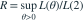
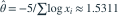

密度为  ，。观测为 0.36、0.51、0.54、0.55、0.70。定义
，。观测为 0.36、0.51、0.54、0.55、0.70。定义
，。观测为 0.36、0.51、0.54、0.55、0.70。定义 
，则 R 约为？- A2.000
- B1.216
- C0.500
- D1.485
我已思考，展开答案与解析
正确答案：B
- 对数似然为 ，其最大值点为

。代入比值得约 1.216。
易错提醒先明确分布参数、独立性和统计量的定义，再进行计算。
资料校订：原题使用大于 1 的比值。本题明确用全空间最大似然除以原假设似然；通常定义的似然比为其倒数。
用户提供练手卷 · 原第 7 题；题目 PDF 第 2 页
单选改编；题干与选项已重新编排